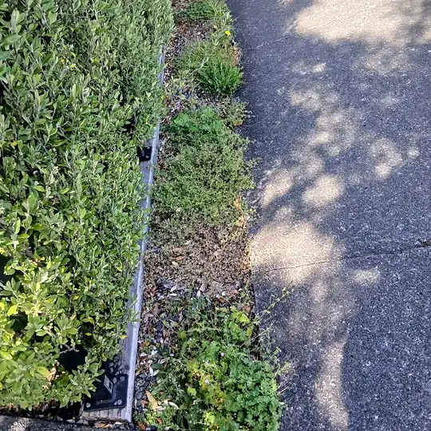
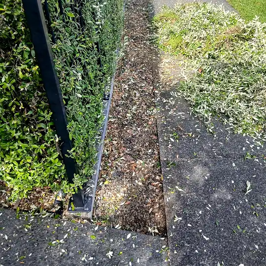

Love your garden, not the upkeep?
Gardens look great when they are kept on top of, and that is the part most people do not have time for. Hamilton Lawn Mowing takes care of the regular garden maintenance so your beds stay tidy and your plants stay healthy all year.
You can book gardening as a one-off tidy-up, or add it to your lawn mowing visits in Hamilton so the whole property is looked after in one go.
Our gardening services
- Weeding garden beds, so weeds do not take over your plants.
- Pruning and cutting back shrubs and plants that are crowding paths, windows or each other.
- Hedge trimming to keep lines straight and growth healthy.
- Weed spraying for paths, driveways, fence lines and gravel areas.
- Tidying garden edges so beds and lawns have a clean line between them.
- Green waste removal for everything we cut and pull out.
We focus on maintenance: keeping existing gardens tidy and healthy. If you are planning something bigger, ask us and we will tell you honestly if it is a job for us.
Recent garden work
Front gardens weeded and the hedge line trimmed at a property in Hamilton Lake, done alongside the regular mow:


Regular garden maintenance
Little and often is the easiest way to keep a garden looking good. Regular visits stop weeds from seeding and stop shrubs from getting out of hand, so each visit is quicker and costs less than a big catch-up.
If the garden has already got away on you, start with a section clean-up and then switch to regular maintenance to keep it that way.
Gardening FAQs
What gardening services do you offer in Hamilton?
We offer garden maintenance, including weeding garden beds, pruning and cutting back shrubs, hedge trimming, weed spraying, tidying garden edges and green waste removal.
Can you do my garden at the same time as my lawns?
Yes. Many customers add gardening to their lawn mowing visits so the whole property is looked after in one go.
How much does gardening cost?
Gardening is quoted per job. The price depends on the size of the gardens, how overgrown they are and how often you want us to come. The quote is free.
Do you take the garden waste away?
Yes. We can remove the green waste from your garden. Green waste removal is quoted per job.
Do you do landscaping?
We focus on garden maintenance rather than landscaping. If you are not sure whether your job fits, ask us and we will tell you straight away.
Get your garden looked after
Tell us about your garden and whether you want a one-off tidy-up or regular visits. We will come back with a free quote.